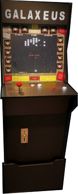

The real Galaxeus arcade machine was built using an Arcade1Up cabinet and a genuine vintage PC mainboard. The original gameboard was removed and replaced with an ISA-based 386SX system featuring an 8-bit VGA graphics card, an 8-bit Sound Blaster card, and an MDA card.

At its heart is the Galaxeus 64 KB ROM, which boots directly from an old ISA network card - or, in this case, a custom ROM booter card I built back in the year 2000. There are no hard drives, floppy drives, or any other moving storage devices - just pure electronics, just like in a classic arcade machine.
For the controls in the earlier versions, I soldered the joysticks and buttons directly to the contacts of a PC keyboard. In later versions, I extracted just the keyboard's controller chip, identified the required pins, attached connectors, and wired everything cleanly to the arcade controls.
The buttons feature integrated LEDs illuminated directly via the PC's parallel port. Once the ship's missile is locked and loaded, the fire button lights up red. The cabinet also features a genuine, high-quality 10-cent coin mechanism, turning the whole machine into a potential office coffee fund. Because the high score and the player's three-letter initials are stored directly in the battery-buffered CMOS memory of the motherboard, they survive power cycles for decades, making the hunt for the top spot much more compelling.
I also had to add a video controller for the original Arcade1Up display, allowing it to connect directly to the VGA card. Initially, I considered installing a genuine CRT monitor, but the cabinet turned out to be too small to properly accommodate a 19" tube. CRT monitors also generate considerable heat and involve potentially dangerous high voltages. Because I didn't want to take any unnecessary risks - particularly the possibility of fire or electric shock - I decided to keep the original Arcade1Up display in place.
The system also features a dedicated secondary monitor driven by an MDA (Monochrome Display Adapter) card. Mounted on a swivel arm, this monitor folds out from the rear of the cabinet whenever needed - or just to show off :-). It provides a live diagnostic view into the game's internal workings, displaying real-time telemetry and debugging data such as memory addresses, internal game counters, CPU performance, and other runtime metrics. This makes it possible to observe what is happening inside the game while it runs - a rather unusual (and quite cool) feature that offers a fascinating glimpse under the hood.
The secondary MDA display is a 15 kHz-capable NEC MultiSync LCD1970NXp, driven through an externally powered 5V MDA-to-VGA signal converter. Because the panel of the NEC MultiSync natively syncs down to MDA's 18.432 kHz (50 Hz vertical), it renders the system's original monochrome output directly without needing a scan-rate or frequency converter.
The build is a completely self-contained arcade machine powered by authentic late-1980s 386 hardware, with zero moving storage media. Replacing the TFT panels with genuine CRTs would have made this exact setup entirely buildable back in the 80s!
[home/back]